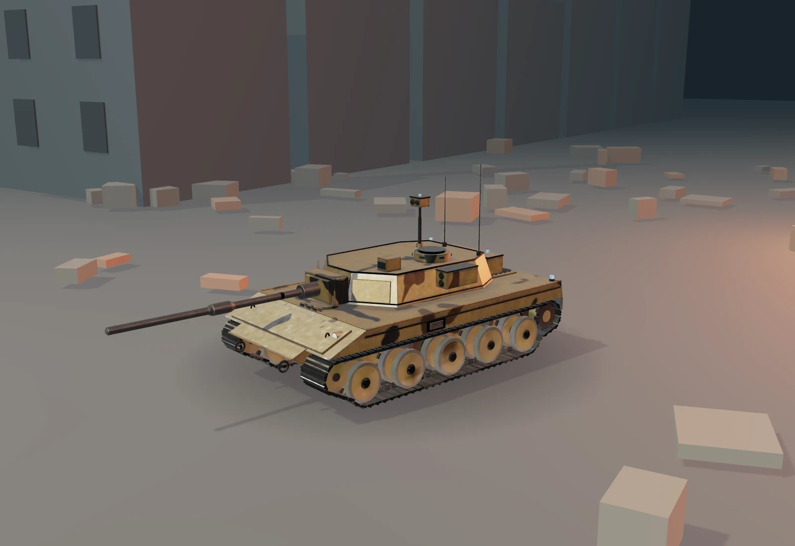

Cada casilla está formada por 4 subbloques. Los proyectiles Mk1–Mk3 eliminan una capa por impacto; los proyectiles pesados Mk4/Mk5 eliminan dos. Los tanques ingenieros enemigos pueden reconstruir muros de ladrillo durante el combate.
Terreno destructible y arenas tácticas de 40×40
BATTLE TANK es un juego de tanques 3D isométrico gratuito donde el mapa forma parte del combate. Cada batalla se libra en una cuadrícula de 40×40 de 1.600 casillas, y casi cada muro, caja y edificio puede destruirse a disparos. Esta guía explica cada tipo de terreno, cuánto castigo soporta y cómo usarlo para cubrirte, emboscar y abrir atajos.
Muros destructibles: ladrillo, hormigón y edificios
Los muros son la base de cada arena. Puedes ocultarte tras ellos, derribarlos para abrir una nueva línea de tiro o dejarlos en pie para proteger tu cuartel general. La rapidez con la que cae un muro depende de tu cañón: los proyectiles Mk1–Mk3 lo desgastan despacio, mientras que los cañones pesados Mk4 y Mk5 lo destruyen varias veces más rápido.

Un muro duro con armadura de acero. Los proyectiles estándar infligen 1 PV por impacto (16 impactos), los Mk4/Mk5 infligen 4 PV y la artillería 6 PV. Se abren cráteres en las caras impactadas y queda expuesta la ferralla.
Edificios de una y dos plantas con 5 a 7 fases de daño visibles. Los disparos arrancan la fachada y el tejado hasta dejar la estructura, y luego el edificio se derrumba en escombros que frenan a cualquier tanque.
En las misiones de asalto a fortaleza, la ciudadela enemiga (48 PV) está rodeada de hormigón y defendida por torretas de cañón, obús y cohetes (100 PV cada una). Destruir la ciudadela gana la misión.
Cobertura, ocultación y línea de visión
El blindaje direccional hace decisiva la posición: los tanques son más fuertes por el frontal y más débiles por la retaguardia, así que el terreno que protege tu flanco vale tanto como una mejora de cañón. Los enemigos siguen las mismas reglas y su IA busca activamente bosques, pasos estrechos y casillas ocultas a tu vista.
Los tanques dentro de casillas de bosque quedan ocultos a la vista y rompen la fijación de los misiles guiados enemigos. Los lanzallamas y las explosiones termobáricas pueden quemar un bosque hasta dejarlo en arena calcinada.
Los erizos de acero bloquean cualquier chasis, pero son lo bastante bajos como para que los proyectiles y misiles vuelen por encima, lo que los convierte en posiciones de tiro ideales en pasos estrechos.
Las explosiones fuertes abren cráteres en el suelo. Un tanque situado en un cráter recibe un 30% menos de daño por onda expansiva y artillería, a costa de una penalización del 15% de velocidad.
Los monumentos indestructibles bloquean por completo el movimiento, los proyectiles, los misiles y la línea de visión. Son coberturas permanentes que ninguna arma puede destruir.
Agua, hielo, barro y otras superficies
Cada casilla tiene una superficie de suelo que altera la conducción de los tanques. La velocidad, la aceleración y el giro combinan la superficie y lo que haya encima, de modo que un cráter en una carretera conserva parte de la ventaja de la vía. Los chasis CH4 todoterreno y CH5 aerodeslizador ignoran casi todas estas penalizaciones.
Las orugas estándar (CH1–CH3) no pueden entrar en aguas profundas, pero los proyectiles y misiles cruzan por encima sin problema. El chasis todoterreno CH4 vadea el agua y el CH5 Grav-Hover se desliza sobre ella, abriendo rutas que los enemigos no esperan.
La aceleración baja de 22 a 4,5 y el frenado de 14 a 1,8, así que los tanques pesados derrapan en los giros. Planifica las paradas con antelación o monta un chasis todoterreno.
El pantano frena a los tanques con orugas al 58% de velocidad y 65% de giro. La arena que queda tras un bosque quemado resta un 22% de velocidad y no ofrece ocultación.
Las carreteras y los puentes dan +20% de velocidad máxima y +25% de aceleración, pero ninguna cobertura. Los pedregales limitan a los tanques con orugas a 1,5 casillas por segundo, sea cual sea su motor.
Objetos explosivos e interactivos
Algunos objetos reaccionan al fuego y pueden cambiar toda una zona del mapa en un segundo. Conocerlos convierte la arena en un arma.
Cualquier impacto detona un bidón e inflige 35 de daño en un radio de 2,8 casillas. La explosión derriba el ladrillo cercano, daña el hormigón y hace estallar los bidones vecinos en reacción en cadena.
El petróleo hace derrapar las orugas como el hielo. Un proyectil, una llama o una explosión cercana lo prende durante 7 segundos de daño por fuego y humo denso que oculta los tanques.
Disparar a una torre (2 PV) inunda el suelo circundante convirtiéndolo en pantano y apaga todo incendio de bosque o petróleo en un radio de 2,5 casillas.
Dos impactos abren la caja y sueltan un potenciador de campo (reparación, PEM, carga APS, misil, munición de cañón o restauración de cuartel) que espera hasta que pases por encima.
Defensa del cuartel general (HQ)
Tu cuartel general es un taller de dos bahías en el borde del mapa. Una línea de 4 casillas de hormigón armado se alza dos filas por delante, con un paso abierto para que puedas acercarte a reparar (+3 PV por segundo a menos de 2,5 casillas). Cada enemigo que atraviesa esa línea amenaza el cuartel, así que muchos jugadores mantienen el hormigón intacto y combaten delante de él en lugar de detrás.
¿Listo para ponerlo en práctica? La sección guía Cómo jugar cubre controles y tácticas, y la Guía de la campaña muestra cómo el terreno de cada región moldea sus misiones.